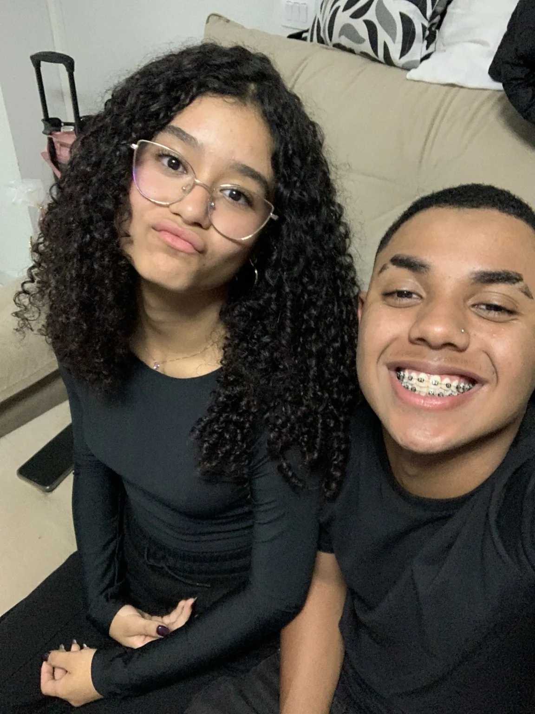
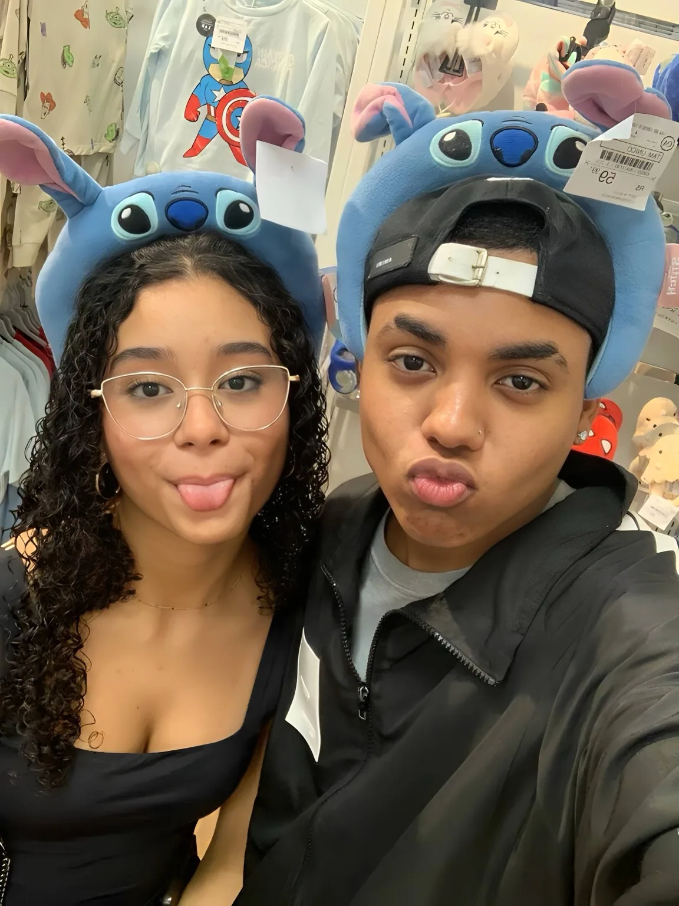
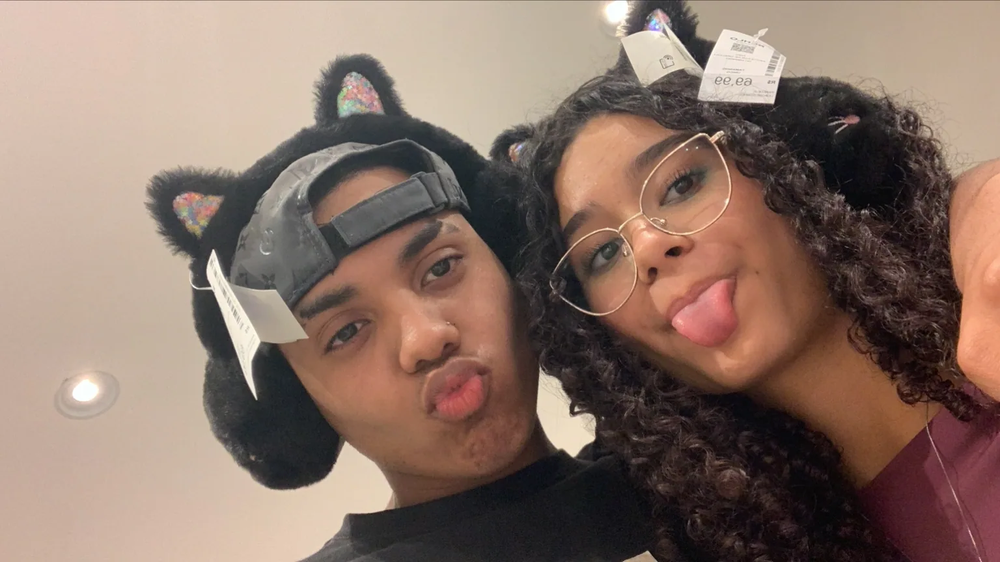
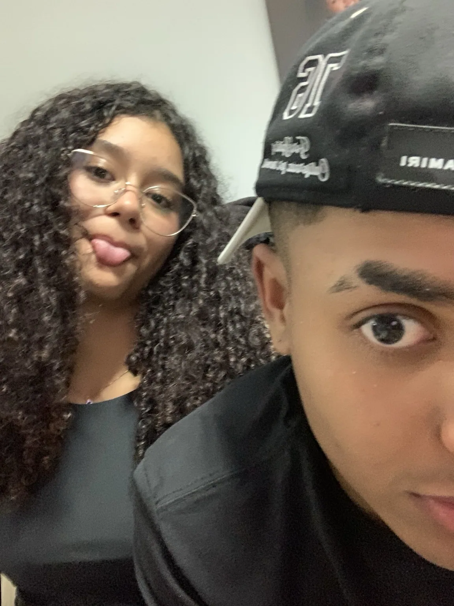
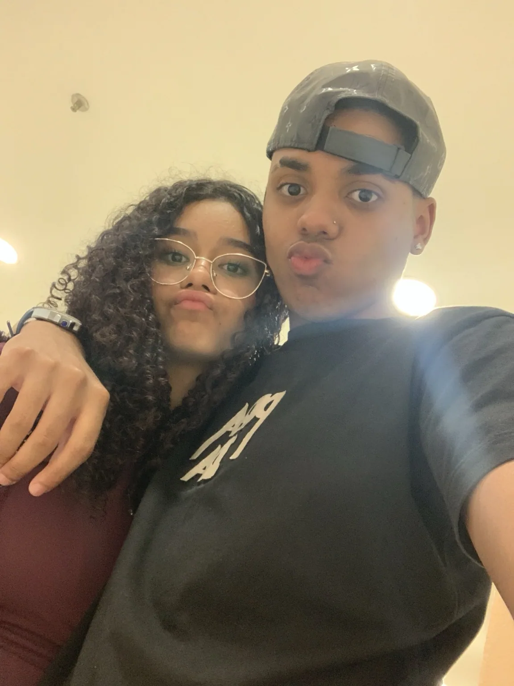

01
ANTES
nossos caminhos
a gente tinha a própria rotina, os próprios assuntos e um monte de coisa acontecendo. até que a Nicole acabou fazendo parte desse começo. de tudo que poderia acontecer depois, aconteceu a gente.
17 · 11 · 2026
separei um cantinho só seu. abre com calma, coloca a música se quiser e vai descobrindo as coisas no seu tempo.
feito com carinho, do seu Kaique.amor, coloquei um pouco da gente aqui. nossas fotos, nossas besteiras e umas coisas que eu queria te falar. vai olhando com calma, tá?


engraçado pensar que vc já tava aí, vivendo seus dias, e eu aqui vivendo os meus, sem imaginar que ia preparar tudo isso pra vc.

a gente tinha a própria rotina, os próprios assuntos e um monte de coisa acontecendo. até que a Nicole acabou fazendo parte desse começo. de tudo que poderia acontecer depois, aconteceu a gente.
foi quando a gente começou a conversar. naquele dia eu ainda não sabia o espaço que vc ia ganhar na minha vida. hoje essa data tem outro significado pra mim.
eu fui conhecendo seus gostos, seu jeito e as coisas que são importantes pra vc. vc foi se tornando alguém que eu queria ter por perto, perguntar como foi o dia e contar do meu também.
agora eu tô aqui, te desejando feliz aniversário desse jeito um pouco exagerado kkkkk. quis separar esse tempo e preparar alguma coisa que vc pudesse abrir de novo.
se eu pudesse escolher de novo,
ainda escolheria conhecer vc.
os dias continuam passando. e é engraçado pensar em tanta coisa que começou com uma mensagem.
nossas caras, nossas besteiras, os filtros aleatórios kkkkk. tem coisa que eu só quero guardar porque tem a gente no meio.
44 fotos guardadas aqui ♡eu gosto muito de falar sobre nós, mas hoje eu quero falar de vc também.
gosto de quando vc vem contar do seu dia, das histórias da escola, das suas amigas e das coisas que passam na sua cabeça. às vezes a gente começa falando de uma coisa e termina rindo de outra nada a ver kkkkk.
quero te ver conhecendo os lugares que tem vontade, encontrando alguma coisa que goste de fazer e conquistando sua independência. quero ouvir vc falando das suas conquistas, até daquelas que vc achar pequenas.
e não precisa correr pra ter a vida toda resolvida, tá? vc tá fazendo 15 anos. tem muita coisa pra aprender, mudar de ideia, tentar de novo e aproveitar.
quero continuar ouvindo suas histórias, sabendo do que vc gosta e conhecendo mais esse seu jeito. tem muita coisa em vc que eu gosto e que às vezes eu nem sei explicar direito.

Maria Eduarda
mas pra mim, Duda.
toque nos cartões. sim, eu presto atenção kkkkk.
não é um mapa astronômico real. é só um pedacinho de céu que eu imaginei pra guardar a nossa data. toca nas estrelas e descobre os recados.
cada flor guarda uma coisa que eu queria te dizer. toca nas flores, princesa. não vale pular todas de uma vez kkkkk.
tem coisa que parece pequena quando eu conto, mas é o que eu mais gosto quando tô com vc.
às vezes o caminho de ônibus até sua casa cansa, mas quando eu chego e vc me recebe com um beijo e um abraço, eu já fico mais leve. como nossos horários de escola não batem durante a semana, a gente aproveita pra se ver no sábado ou no domingo.
tem fim de semana que consigo ir nos dois dias, tem outros que só dá pra ir em um. eu gosto de aproveitar esse tempo com vc.
gosto de estar aí com vc. ♡eu fazendo cócegas em vc, vc me mordendo de brincadeira kkkkk. ou a gente vendo TikTok e rindo junto. não precisa acontecer nada demais pra eu gostar de estar ali.
vc conta das suas amigas, do que aconteceu na escola, das coisas que quer. eu conto da minha semana e quando vejo já tô mais leve. estar com vc me traz paz, amor.
a gente nem sempre conversa o dia inteiro. tem escola, tem dia que eu durmo cedo e os horários não ajudam. mas só de saber que vc tá bem, saber o que tá fazendo, já é bom. depois a gente conversa mais.
quando eu trabalhava, tinha dia que eu só conseguia falar com vc no almoço. chegava cansado, às vezes nem respondia, e quando pedia desculpa vc entendia. eu percebia sua vontade de estar comigo. esse seu cuidado ficou comigo, viu?
tem um carinho guardado pra cada um desses momentos. abre uma carta quando der vontade, sem precisar de data especial.
não precisa ser nada absurdo. tem muita coisa boa que cabe num sorvete, numa conversa ou num fim de tarde.
amor, eu poderia ter escrito só uma mensagem, mas comecei a pensar em umas ideias e quando percebi já queria colocar um monte de coisa aqui kkkkk.
eu fui juntando as informações que vc me contou e imaginando como transformar isso numa surpresa. os lírios, as cores, os textos, as fotos… queria que vc abrisse e sentisse que tinha alguma coisa sua em cada parte.
e como eu quero seguir na área de tecnologia, isso também virou uma oportunidade de estudar e aprender fazendo alguma coisa que tem significado pra mim.
teve hora que eu me estressei, sim. quem olha pronto não vê as coisas que deram errado no caminho kkkkk. mas eu queria conseguir terminar e olhar pra isso pensando: “agora tá do jeito que eu queria entregar pra ela”.
gosto de saber que usei esse tempo pra preparar algo pra vc. espero que até nos detalhes mais simples vc consiga perceber o carinho que eu coloquei.
chegou até aqui, amor? ainda falta a última carta. ela é um pouquinho grande… mas vc já sabe como eu sou kkkkk.
